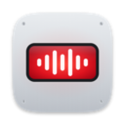
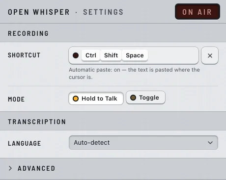
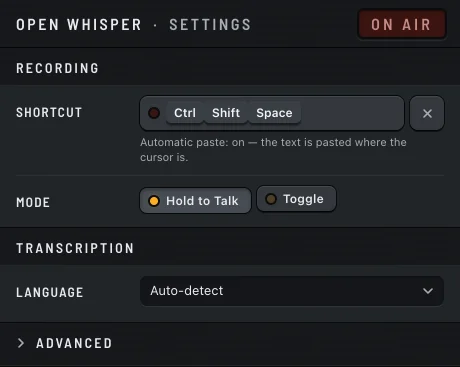
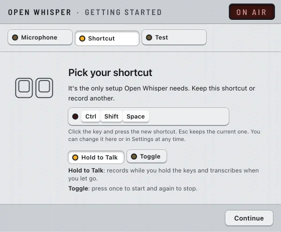
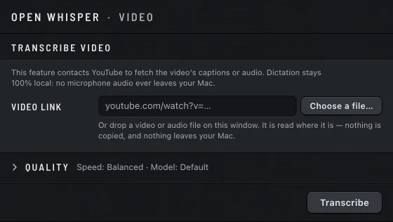
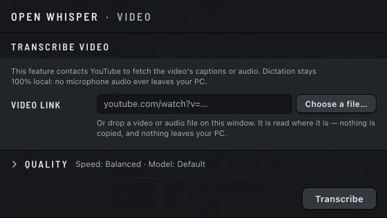
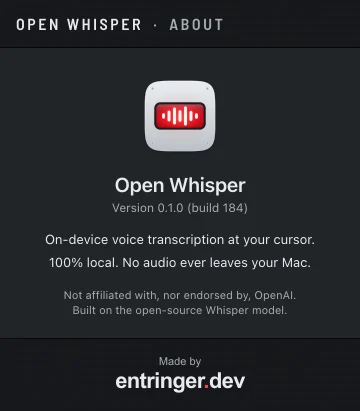
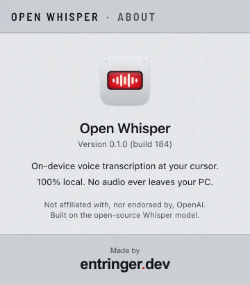
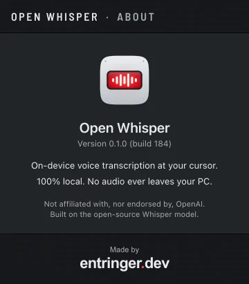

Local
Your voice stays on your computer.
Transcription runs on your machine, with a model that ships inside the app. No account, no server, no internet needed to dictate. Any network monitor will show you.
- Account
- None
- Audio sent
- None
- Analytics
- None
Marina —

100% freeNo account, no subscription, no trial.
Open Whisper turns your voice into text in any app: on your computer, in your language, with nothing to set up.
Try it: hold ⇧⌘SpaceCtrlShiftSpace, then let go. Esc cancels. Try it: press and hold the key below. The demo plays a sample sentence. Nothing is listened to. The demonstration needs JavaScript; the download below does not.
Recorded on a Mac, unedited: a synthetic voice reads the same sentence into the microphone, and the installed app transcribes it on the computer and pastes it. The captions are Open Whisper’s too.
Open Whisper lives in the menu bar on a Mac and in the notification area on Windows. These are all of its windows.
















The app’s own windows, rendered from its source.
Your voice stays on your computer.
Transcription runs on your machine, with a model that ships inside the app. No account, no server, no internet needed to dictate. Any network monitor will show you.
Speak your language. It works it out.
Portuguese, English, Spanish and dozens more, detected as you speak. Switch languages between dictations without touching a setting.
What you said is never lost.
When the text cannot be pasted (a password field, an administrator window, nowhere to type) it waits on the clipboard and the app tells you. Paste it wherever you like.
Paste a YouTube link or drop an audio or video file, and get a transcript with timestamps. Or do it from a terminal:
open-whisper transcribe interview.m4a --format srtA video link contacts YouTube to fetch the video. A file is read where it is and never leaves your computer.
Free, with no account and no subscription.
Windows warns you once. Here is what to do.
Check the download, and compare with the .sha256 file on the release page:
certutil -hashfile Open.Whisper_0.1.0_x64-setup.exe SHA256The Mac version ships once Apple has signed and notarized it. It will install with Homebrew or a .dmg.